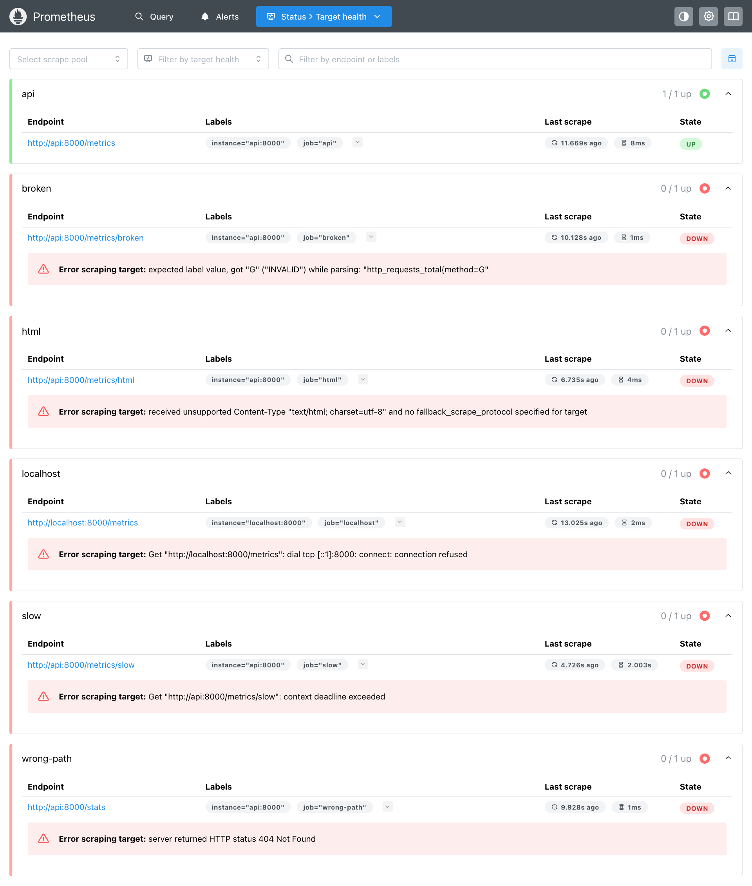
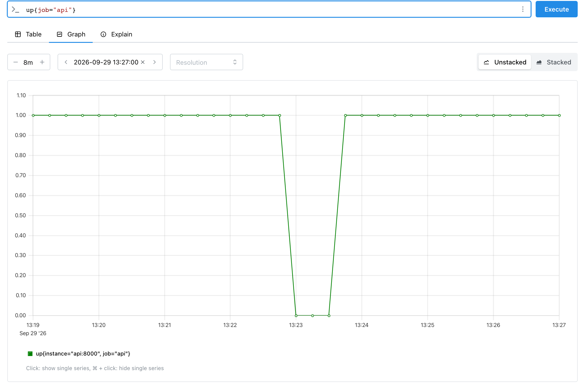
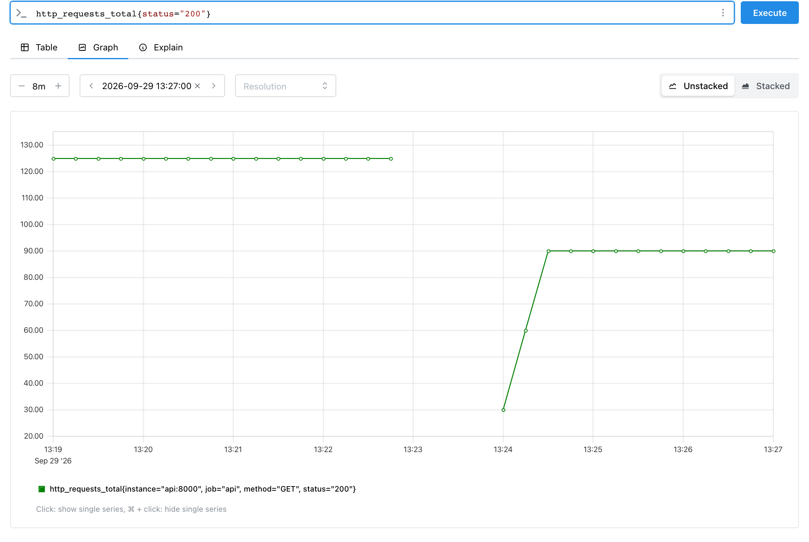

Модуль 2 · как работает prometheus · сбор метрик
Глава 2.4
Scrape: как Prometheus
собирает значения
Target и ответ /metrics описывают, откуда и в каком виде берутся метрики. Scrape — действие, которое их соединяет: Prometheus периодически запрашивает /metrics и сохраняет полученные значения. В этой главе один scrape разобран по шагам, затем — два параметра, от которых зависит сбор: интервал и предельное время ожидания. Вторая половина главы посвящена результату: какой scrape успешный, как выглядят шесть настоящих ошибок сбора и что остаётся в базе, когда приложение недоступно.
- Категория
- Механизм сбора
- Уровень
- Средний и продвинутый
- Опирается на
- Главы 2.2 и 2.3
- Результат
- Диагностика target по up, scrape_* и тексту ошибки
§1Понятие scrape
Scrapeсбор · один опрос одного target
Один HTTP-запрос Prometheus к target и обработка ответа: разбор текста, добавление меток target и запись отсчётов в базу. Scrape повторяется для каждого target с периодом scrape_interval; ответ ждут не дольше scrape_timeout.
Упрощённо scrape — это GET /metrics раз в 15 секунд и сохранение того, что пришло. В этой главе разобрано, что стоит за словами «сохранение» и «раз в 15 секунд».
Слово заимствовано из английского scrape — «соскоблить, собрать с поверхности». В русских текстах пишут «скрейп», «сбор» или «опрос»; в интерфейсе, документации и именах метрик Prometheus используется английское слово, поэтому здесь оно сохранено.
§2Один scrape по шагам
Диаграмма показывает один scrape target api:8000 на стенде. Три вертикальные линии — участники: Prometheus, приложение и хранилище TSDB. Стрелки — сообщения между ними, оранжевые стрелки несут данные. Кнопка «шаг →» открывает шаги по одному.
Scrape — обычный HTTP-запрос, и приложение обрабатывает его как любой другой. Поэтому GET /metrics попадает в журнал доступа: за время работы стенда uvicorn записал 363 строки "GET /metrics HTTP/1.1" 200 OK. По той же причине приложение стенда исключает путь /metrics из своего счётчика запросов, иначе счётчик рос бы от каждого сбора.
§3Scrape interval
scrape_interval — период между началами двух scrape одного target. Он задаётся в global для всех заданий и может быть переопределён в отдельном задании. Если не задать его совсем, Prometheus использует 1 минуту. Это видно в загруженной конфигурации (Status → Configuration или /api/v1/status/config) для файла, где интервал не указан:
global: scrape_interval: 1m scrape_timeout: 10s evaluation_interval: 1m scrape_configs: - job_name: api scrape_interval: 1m scrape_timeout: 10s metrics_path: /metrics scheme: http
Обычные значения — 15 или 30 секунд; стенд использует 15. От интервала зависят три вещи.
| Что | Как зависит от интервала | Пример |
|---|---|---|
| Подробность истории | Отсчётов в ряду — один на интервал. Изменение между двумя scrape для gauge не видно совсем | Очередь выросла на 7 секунд и вернулась: при интервале 15 с этого всплеска может не быть в данных |
| Нагрузка и объём | Отсчётов в минуту = число рядов × 60 / интервал | 10 000 рядов при 15 с — 40 000 отсчётов в минуту; при 60 с — 10 000 |
| Скорость реакции | Падение target обнаруживается не раньше следующего scrape | При 1 минуте up станет 0 в худшем случае через минуту |
Для счётчика потеря между сборами другая. Counter накапливает события сам, и следующий scrape увидит сумму: 7-секундный всплеск запросов отразится в приросте счётчика, хотя форма всплеска пропадёт. Gauge показывает только значение в момент scrape. Поэтому события считают счётчиками, а gauge используют для величин, которые меняются медленнее интервала.
Scrape разных target не начинаются одновременно. Prometheus вычисляет для каждого target постоянное смещение внутри интервала по хешу его меток и адреса. На стенде с шестью заданиями и интервалом 15 с остатки отметок времени от деления на 15 были такими:
api 0.025 0.021 0.021 0.021 broken 1.562 1.566 1.562 1.569 wrong-path 1.766 1.766 1.766 1.766 html 4.960 4.959 4.959 4.964 slow 6.974 6.973 6.970 6.976 localhost 13.667 13.670 13.667 13.671
Каждый target собирается в «свою» секунду интервала, и она сохраняется от сбора к сбору с точностью до миллисекунд. Так нагрузка на Prometheus и на сеть распределена по интервалу, а тысяча target не получают запрос в один момент. Этот приём старше Prometheus: в главе о системе Borgmon книги Google SRE сказано, что Borgmon распределяет сбор с каждого target по всему интервалу, чтобы target не опрашивались синхронно.
§4Scrape timeout
scrape_timeout — сколько Prometheus ждёт ответа. Отсчёт идёт от начала запроса до конца чтения тела ответа. По умолчанию — 10 секунд. Два правила проверены на стенде.
- Timeout не больше interval. Иначе конфигурация не загружается. Проверка файла с
scrape_interval: 15sиscrape_timeout: 20s:FAILED: parsing YAML file …: scrape timeout greater than scrape interval for scrape config with job name "api" - Если timeout не задан, а interval меньше 10 с, timeout равен interval. Для
scrape_interval: 5sбез timeout Prometheus загрузилscrape_timeout: 5s.
Значение timeout Prometheus передаёт приложению в заголовке X-Prometheus-Scrape-Timeout-Seconds. Exporter, который опрашивает медленную систему, может по нему закончить работу раньше и вернуть частичный результат.
На стенде путь /metrics/slow отвечает через 3 секунды, а для задания slow timeout — 2 секунды:
Error scraping target: Get "http://api:8000/metrics/slow": context deadline exceeded
scrape_duration_seconds{job="slow"} 2.001425834
Prometheus прервал запрос ровно по истечении timeout, и scrape_duration_seconds показывает время ожидания — 2,001 с. Приложение при этом продолжает готовить ответ: прерывание происходит на стороне Prometheus. Если /metrics работает медленно, увеличение timeout скрывает причину; обычно ищут, что в приложении делает ответ медленным — запрос к базе при каждом сборе, блокировка, огромное число рядов.
§5Модель сбора
Модель ниже воспроизводит правила из §3 и §4 на трёх минутах работы одного target. Пунктир — настоящая длина очереди в приложении, она меняется непрерывно; на 62-й секунде очередь на 7 секунд вырастает. Оранжевая линия — то, что сохранит Prometheus. Меняйте интервал, timeout и время ответа; флажок останавливает приложение на 35 секунд.
Что стоит проверить в модели. При интервале 15 с всплеск на 62-й секунде попадает в данные, при 30 и 60 с — пропадает целиком. Если время ответа больше timeout, каждый scrape неуспешный, up лежит на нуле, а оранжевой линии нет. Timeout больше интервала — конфигурация не загружается. При остановке приложения линия прерывается и возобновляется после первого успешного scrape.
§6Успешный scrape и ряды о сборе
Scrape успешен, если выполнены все условия ниже. Нарушение любого из них делает весь scrape неуспешным.
Условия успешного scrape
https) прошёл проверку.scrape_timeout.fallback_scrape_protocol.sample_limit, label_limit, body_size_limit и другие лимиты задания. По умолчанию все они равны 0, то есть выключены; при превышении документация предписывает считать неуспешным весь scrape.После каждого scrape, успешного или нет, Prometheus записывает пять рядов о самом сборе. Их нет в ответе приложения; они получают метки target. Значения ниже — последний scrape target api:8000 на стенде:
| Ряд | Значение | Что означает |
|---|---|---|
up | 1 | 1 — scrape успешен, 0 — неуспешен. Основной признак доступности target |
scrape_duration_seconds | 0.006035834 | Сколько длился scrape: 6 мс. У неуспешного по timeout — примерно timeout |
scrape_samples_scraped | 3 | Сколько отсчётов было в ответе |
scrape_samples_post_metric_relabeling | 3 | Сколько осталось после правил metric_relabel_configs; на стенде правил нет |
scrape_series_added | 0 | Приблизительно сколько новых рядов появилось в этом scrape. Все три ряда уже существовали, поэтому 0 |
Рост scrape_samples_scraped без изменений в коде обычно означает рост кардинальности: в метку попало значение из неограниченного набора. scrape_duration_seconds, приближающийся к timeout, предупреждает о будущих ошибках сбора раньше, чем up станет 0. С флагом --enable-feature=extra-scrape-metrics добавляются ещё три ряда: настроенный timeout, настроенный sample_limit и размер ответа в байтах.
В описании Borgmon в книге Google SRE сказано, что Borgmon записывает для каждого target «синтетические» переменные: разрешилось ли имя в хост и порт, ответил ли target на сбор, ответил ли на проверку здоровья и когда сбор закончился. По ним легко писать правила, находящие недоступные задачи. up и scrape_* в Prometheus решают ту же задачу.
§7Неуспешный scrape: шесть ошибок
Для опыта стенд запускается с файлом prometheus-errors.yml. В нём, кроме рабочего задания api, пять заданий, каждое с одной ошибкой. Все пять обращаются к тому же приложению.

| Задание | Текст ошибки | Причина | Что проверить |
|---|---|---|---|
slow | Get "http://api:8000/metrics/slow": context deadline exceeded | Ответ дольше timeout | Время ответа /metrics через curl -w '%{time_total}'; что делает обработчик |
wrong-path | server returned HTTP status 404 Not Found | Неверный metrics_path | Путь в браузере; у фреймворка может быть свой путь |
localhost | Get "http://localhost:8000/metrics": dial tcp [::1]:8000: connect: connection refused | По адресу никто не слушает порт | Откуда смотрит Prometheus (глава 2.2); запущено ли приложение |
broken | expected label value, got "G" ("INVALID") while parsing: "http_requests_total{method=G" | Синтаксическая ошибка в тексте | Строку, на которой остановился разбор; код, который собирает текст |
html | received unsupported Content-Type "text/html; charset=utf-8" and no fallback_scrape_protocol specified for target | Неверный заголовок | curl -i; fallback_scrape_protocol для программ, которые нельзя исправить |
api, приложение остановлено | Get "http://api:8000/metrics": EOF, затем context deadline exceeded | Контейнер приложения остановлен | docker compose ps; журнал приложения |
Текст ошибки начинается с того шага §2, на котором сбор остановился. dial tcp — соединение не установлено. HTTP status — соединение есть, приложение ответило не 200. while parsing — ответ получен, текст не разобран. context deadline exceeded — время вышло на любом шаге. Последняя строка таблицы зависит от окружения: в Docker Desktop после остановки контейнера сначала была ошибка EOF, затем context deadline exceeded.
У опыта есть побочный эффект. Задание wrong-path каждые 15 секунд запрашивает /stats, приложение отвечает 404 и засчитывает этот ответ в http_requests_total{status="404"}. За несколько минут опыта значение выросло до 59. Ошибочно настроенный сбор искажает метрики самого приложения.
§8Что остаётся в базе
Опыт на рабочей конфигурации: в 13:22:41 приложение остановлено командой docker compose stop api, в 13:23:32 запущено снова, затем на него отправлено 90 запросов тремя порциями. Ниже — отсчёты двух рядов за это время, как их вернул Prometheus.
время up http_requests_total{status="200"}
13:22:07 1 125
13:22:22 1 125
13:22:37 1 125
13:22:52 0 —
13:23:07 0 —
13:23:22 0 —
13:23:37 1 —
13:23:52 1 30
13:24:07 1 60
13:24:22 1 90
Те же ряды на графикепереключите вкладку


В этих данных четыре наблюдения.
upзаписан и во время остановки. Prometheus пишет его после каждого scrape, поэтому поupвидно и начало, и конец недоступности. Точность — один интервал: остановка в 13:22:41 заметна в отсчёте 13:22:52.- Ряд приложения прерван сразу. После неуспешного scrape в 13:22:52 ряд
http_requests_totalполучил метку устаревания. Мгновенный запросhttp_requests_total{job="api"}во время остановки вернул пустой результат, аlast_over_time(http_requests_total{job="api"}[5m])— последние значения. Без метки устаревания Prometheus продолжал бы показывать последнее значение ещё 5 минут (lookback delta — окно, в котором запрос ищет последний отсчёт ряда). - После запуска ряда нет до первого запроса. В 13:23:37
upуже 1, но новый процесс ещё не создал ряд счётчика (глава 2.3, §5). - Часть событий потеряна. Прямо перед остановкой на приложение было отправлено ещё 20 запросов. Последний успешный scrape прошёл в 13:22:37, до них, и эти 20 запросов не попали в Prometheus ни в каком виде. Счётчик нового процесса начался с нуля.
Сброс счётчика с 125 до 30 — обычное событие для counter. Функции запросов, считающие скорость роста, распознают уменьшение значения как перезапуск и не показывают отрицательной скорости. Потерянные 20 запросов они восстановить не могут. Это одна из причин, по которым документация не советует Prometheus для точного учёта (глава 2.1, §7).
§9Проверьте себя
Вопрос 1В задании scrape_interval: 15s и scrape_timeout: 20s. Что произойдёт?
До сбора дело не дойдёт: конфигурация не пройдёт проверку.
Верно.
promtool check configна стенде выдалscrape timeout greater than scrape interval.Timeout подстраивается под interval, только когда timeout не задан. Явно заданное неверное значение — ошибка.
Вопрос 2Какую отметку времени получит отсчёт http_requests_total, если scrape начался в 12:00:00.000, а ответ пришёл через 40 мс?
Верно. Все отсчёты одного scrape получают время начала запроса, если приложение не указало своё время.
Время ответа видно в
scrape_duration_seconds, но отметка времени отсчётов — начало scrape.Библиотека не хранит время изменения и не передаёт его в ответе.
Вопрос 3Ошибка target: server returned HTTP status 404 Not Found. На каком шаге остановился scrape?
Тогда в тексте было бы
dial tcp. Код 404 значит, что приложение ответило.Верно. Проверяют
metrics_pathзадания и путь, по которому приложение отдаёт метрики.До разбора дело не дошло: тело ответа с кодом, отличным от 200, не разбирается.
Вопрос 4Приложение упало в 12:00:05, последний успешный scrape был в 12:00:00, интервал 15 с. Что вернёт мгновенный запрос http_requests_total в 12:00:30?
Так было бы без меток устаревания. Неуспешный scrape в 12:00:15 пометил ряды приложения устаревшими.
Верно, так было на стенде. Последние значения можно получить функцией
last_over_time.Упавшее приложение не отдаёт ничего. Нулём становится только
up.
Вопрос 5Почему очередь, выросшая на 7 секунд, может не попасть в данные при интервале 30 с, а число запросов за те же 7 секунд попадёт?
Интервал общий для всех рядов target, от типа он не зависит.
Верно. Прирост счётчика за 7 секунд будет в следующем отсчёте; величина очереди в момент scrape уже вернулась к норме.
Эти правила меняют и отбрасывают ряды по меткам; значения они не сравнивают.
- Prometheus. Configuration: scrape_config — prometheus.io/docs/prometheus/latest/configuration/configuration
- Prometheus. Jobs and instances: automatically generated labels and time series — prometheus.io/docs/concepts/jobs_instances
- Prometheus. Querying basics: staleness — prometheus.io/docs/prometheus/latest/querying/basics
- Beyer B. и др. Site Reliability Engineering. Глава 10. Practical Alerting from Time-Series Data — sre.google/sre-book/practical-alerting
- Стенд модуля: опыты с ошибками, остановкой приложения и конфигурацией выполнены 29.09.2026, Prometheus 3.5.0